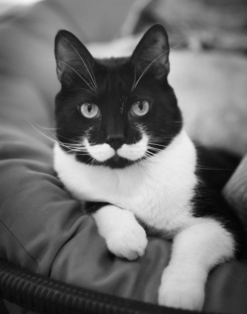
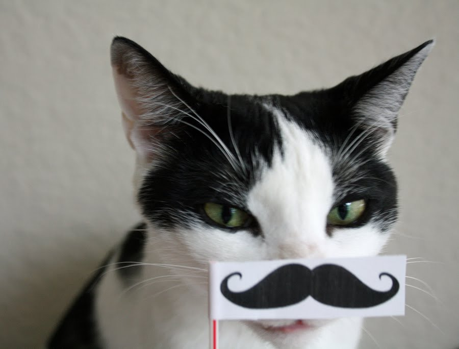

Mustache Cats are the best kind of cat.
Mustache cats are superior in every way. Mustache cats are smarter, more intelligent and also more clever. They are very, very impressive.
Mustache cats think other cats are simply uncivilized. Other cats sometimes call mustache cats hipster-douchbag cats, but this is simply not true, according to mustache cats from high class fences around the world.
Why Mustache Cats Are Better
Mustache cats are better at well, everything. But mostly at having a mustache. Here are some differences between mustache cats and regular, poor-ass cats.
- ~ Mustache cats poop in crystal litter, while other cats just poop on themselves.
- ~ Mustache cats come with top hats. Other cats come with fleas.
- ~ Mustache cats know the secrets to the universe. But they only share with other mustache cats.
- ~ Mustache cats are far more interesting than you.
How to fake a mustache cat.
Although practically impossible, you are welcome to try. Some ideas how to fake a mustache cat are:
- ~ Draw a mustache on a cup and let your cat drink from it.
- ~ Get a cone from the vet. Draw a mustache on the cone.
- ~ While cat is sleeping, draw a mustache with a sharpie.
- ~ Make felt catnip-filled mustache toys. Cat will carry it around in its mouth for desired effect.
Your cat is now a fake, lame-ass mustache-ish cat. Yay, you.